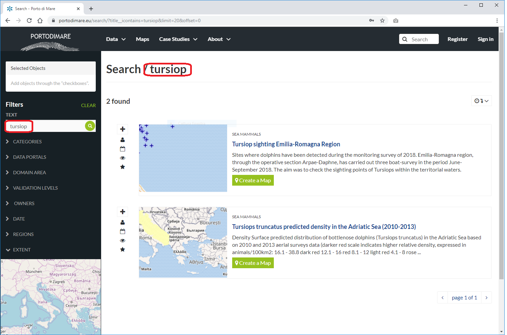
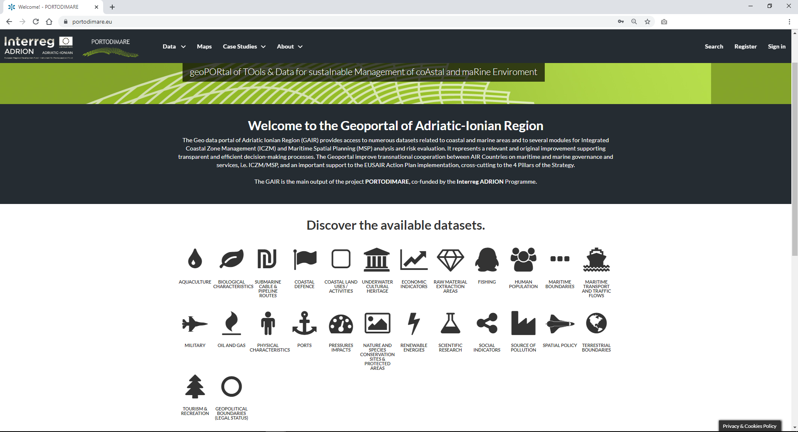
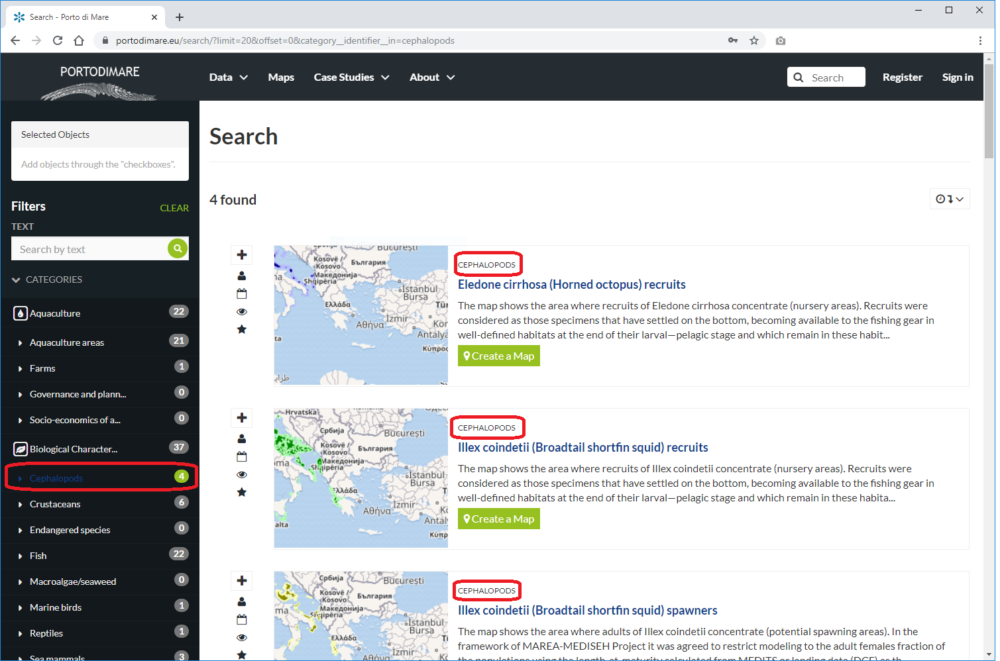
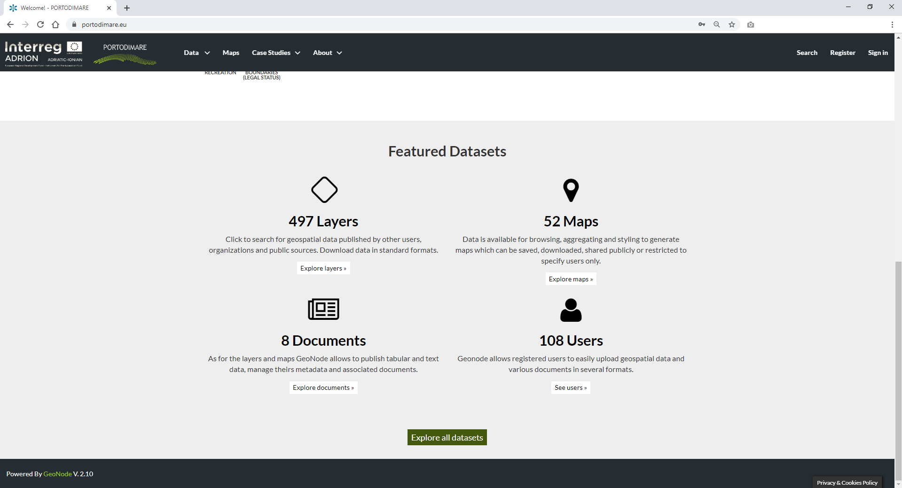
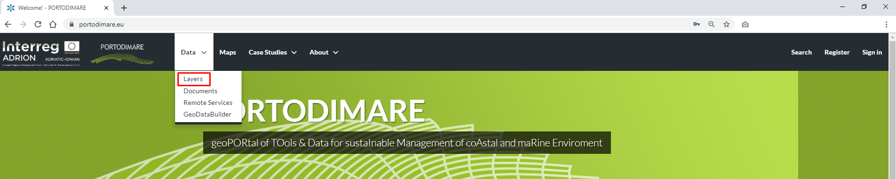
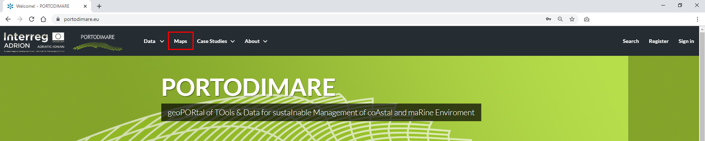

Finding Contents¶
PORTODIMARE Homepage
Warning
SEARCH BOX / TEXT FILTER¶
The Search box in the navigation bar (see the picture below) let you type a text and find all the data which have to deal with that text. Autocomplete search suggestion completes a word in the search bar, as-you-type, and provides search suggesionts based on related search terms.
Search tool in GAIR welcome page
When you trigger a search you are brought to the Search page which shows you the search result through all data types.
The Search page, which you will be redirected to, will have the TEXT filter already set with the name you have typed in the search box (see the picture below).
Results of searching made by text
( user guide under construction )
Warning
CATEGORIES¶
Searching for datasets by category
Results of searching made by category
DATA PORTALS¶
Data can be filtered by data portals. In this section it is possible to select the data in relation to the portal where this data is hosted. Government organizations sometimes host open data portals as a way of meeting their regional freedom of information legal requirements. Another common use case is open data portals for sharing data in some field of research for the benefit of other researchers.
DOMAIN AREA¶
Data can be filtered by domain area. It is possible to select a data on the basis of the domain area representative of the data, it can represent areas (marine or terrestrial) at local, regional, national and international level.
VALIDATION LEVELS¶
Data can be filtered by validation levels (“official” and “research”). The data can be selected considering their level of validation and can be of two types: official or research.
OWNERS¶
Data can be filtered by ownership. In this section you can view the various owners of the data, see how many levels belong to each individual owner and select the levels belonging to it.
DATE¶
Data can be filtered by date. It is possible to select data on the basis of a period of time of interest, indicating a single date or the start and end date of the interests.
REGIONS¶
Data can be filtered by region. Autocomplete search suggestion completes a word in the search bar, as-you-type, and provides search suggesionts based on related search terms. In this section, the data can be selected at single country level or at European or global level.
EXTENT¶
Note
An interesting type of filter is EXTENT: you can apply a spatial filter by moving or zooming a map within a box, it’s aviable in left menu, as shown in the picture below.
Search filter by EXTENT
Also data can be ordered by date, name and popularity.
Featured Datasets
For each data type GAIR makes available an individual Search page, the next paragraphs will explain that in depth.
Layers¶
To find Layers you can:
use the Layers quick link of the Featured Datasets
click on the Layers link of the Data dropdown menu in the navigation bar
Link for Layers
Maps¶
If you are searching for Maps you can:
use the Maps quick link of the Featured Datasets section as described above
click on the Explore Maps link of the Maps dropdown menu in the navigation bar
Link for Maps
As seen for the other data types, the Maps search page allows you to filter your maps by a combination of criteria.
Documents¶
When you are searching for Documents you can:
use the Documents quick link of the Featured Datasets section as described above
click on the Documents link of the Data dropdown menu in the navigation bar
Link for Documents
The Documents search page looks like the generic one but only Document is considered as data type. You can also use more than one filter at the same time.